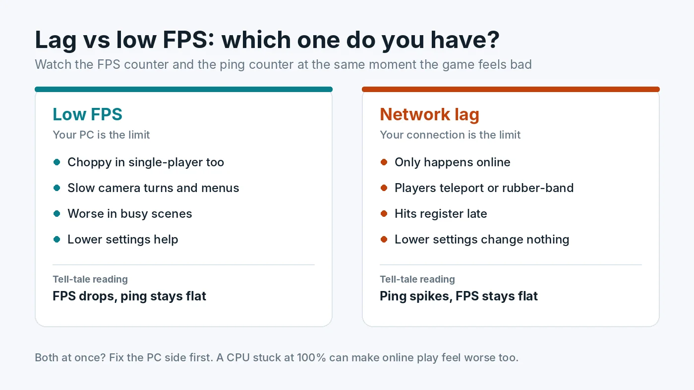

Lag vs Low FPS: How to Tell If It Is Your Internet or Your PC
"My game is lagging" can mean two completely different problems. Sometimes the PC cannot render frames fast enough. Sometimes the PC is fine and the connection to the game server is the problem. They feel similar in the moment, but they have different causes and different fixes. Buying a new graphics card will not fix a bad connection, and a faster internet plan will not fix a CPU bottleneck. This guide shows how to tell them apart in a few minutes.

Two Different Problems Behind the Word "Lag"
Low FPS means your PC produces fewer frames per second than you want. The picture itself looks choppy, camera turns feel heavy and the whole game slows down, including menus and single-player modes. The cause is on your computer: the CPU, GPU, RAM, storage, heat or settings.
Network lag means the information travelling between your PC and the game server is slow or unreliable. Your screen can stay perfectly smooth while other players teleport, your shots do not register, or you snap back to where you were a second ago. This is often called rubber-banding. The cause is your connection, your router, your internet provider or the server.
A simple way to think about it: FPS is how fast your PC paints the picture. Ping is how long it takes for news from the server to reach you. A fast painter with slow news still shows you an out-of-date world.
The Quick Test: Watch FPS and Ping Together
The most reliable way to tell the difference is to watch both numbers at the moment the game feels bad.
- Turn on an FPS counter. Use the overlay in Steam, your graphics driver, or a monitoring tool. Our guide on how to check PC usage covers the common options.
- Turn on the game's network stats. Most online games can show ping, and many also show packet loss. Look in the game's interface or network settings.
- Play until the problem happens. When it does, note what each number is doing.
- FPS drops but ping stays steady: it is a PC performance problem.
- Ping spikes or packet loss appears while FPS stays steady: it is a network problem.
- Both look fine but the game still hitches: look at frame time and 1% lows rather than average FPS. Short frame time spikes can feel like lag without moving the FPS counter much. Our guide to stuttering and 1% lows explains how to spot them.
Another quick clue: if the same problem appears in single-player or offline modes, the network cannot be the cause.
Understanding the Network Numbers
Ping (latency)
Ping is the round-trip time to the server in milliseconds. As a rough guide, under 50 ms feels responsive in most games, 50 to 100 ms is usually playable, and above that, fast-paced games start to feel delayed. Distance to the server sets a floor that no upgrade can remove, so pick the closest server region when the game allows it.
Jitter
Jitter is how much the ping changes from moment to moment. A steady 60 ms often feels better than a ping that jumps between 20 and 150 ms. Wi-Fi interference and a busy home network are common causes.
Packet loss
Packet loss means some data never arrives. Even a few percent can cause rubber-banding, missing hits and sudden freezes in player movement. Any steady packet loss is worth fixing.
Download speed
Games need surprisingly little bandwidth while you play. A fast plan does not guarantee low ping. Speed matters more for downloading games and updates, or when other people on the same network are streaming or downloading at the same time.
How to Fix Network Lag
- Use a wired connection. Ethernet gives the most stable ping and the least packet loss. If a cable is not practical, use the 5 GHz or 6 GHz Wi-Fi band and sit closer to the router.
- Restart the router and modem. It is basic, but it clears many temporary problems.
- Stop other traffic. Pause downloads, cloud backups, game updates and video streams on your PC and on other devices in the house. Some routers offer quality of service settings that prioritise gaming traffic.
- Choose the nearest server region in the game settings.
- Check whether the problem is the server. If only one game lags and others are fine, look at the game's official status page or community channels before changing anything at home.
- Contact your provider if a wired connection still shows regular packet loss or large ping spikes across several games and servers.
How to Fix Low FPS
If the readings point to your PC, the next step is finding which part is the limit. Check whether the CPU or the GPU is maxed out, then work through fixes in order, starting with free ones such as settings, drivers and background apps. Our Windows settings for gaming performance guide lists the settings that are actually worth changing. Our guides on how to check a PC bottleneck and fixing a PC bottleneck and boosting FPS walk through this step by step. If GPU usage is low while FPS is poor, read how to fix low GPU usage.
When It Is Both
Sometimes a slow PC and a weak connection happen together, and each makes the other feel worse. A CPU stuck at 100% can delay how quickly the game processes and displays updates from the server, which can feel like extra lag. Background downloads running on the same PC can also eat into both CPU time and bandwidth. In these cases, fix the PC side first, because it is fully under your control, then retest the network. Our guide on how to fix 100% CPU usage in games is a good place to start.
If you stream while playing, the encoder adds a third possibility. Read our guide to gaming and streaming at the same time to separate encoding lag, rendering lag and dropped network frames.
Input Lag Is a Third Thing
Input lag is the delay between pressing a button and seeing the result on your own screen. It comes from the PC, the display and settings such as V-Sync, not from the internet, and it happens offline too. If the game feels delayed even in single-player, see our guide to V-Sync, G-Sync, FreeSync and FPS caps. Games with a latency option can also benefit from NVIDIA Reflex and AMD Anti-Lag compared.
Conclusion
Before you spend money, find out which kind of lag you have. Watch FPS and ping at the moment the game feels bad. Falling FPS means the PC is the limit, and spiking ping or packet loss means the connection is. Fix network problems with a wired connection, less background traffic and a closer server. Fix PC problems by finding the real bottleneck, starting with the free PC Bottleneck Calculator.
Frequently Asked Questions
Why does my game lag when my FPS is high?
High FPS with lag usually means a network problem. Check ping and packet loss while playing. Spikes in ping, packet loss or an unstable Wi-Fi connection cause rubber-banding and delayed hits even when your PC renders smoothly.
What is a good ping for gaming?
Under about 50 ms feels responsive in most online games, and 50 to 100 ms is usually playable. Consistency matters as much as the number, because sudden spikes feel worse than a steady higher ping.
Can a bad PC cause high ping?
Rarely in a direct way. Ping measures the round trip to the server. A PC at 100% CPU can delay how quickly the game processes and shows network updates, and background downloads on the same PC can use up your connection, but true high ping is almost always a network or server issue.
Does upgrading my GPU fix lag?
Only if the problem is low FPS. A faster graphics card will not reduce ping, packet loss or rubber-banding. Check FPS and ping side by side first, so you spend money on the part that is actually limiting you.
Is Ethernet better than Wi-Fi for gaming?
Usually yes. A wired connection avoids interference and gives more stable ping with less packet loss. If cables are not practical, a 5 GHz or 6 GHz Wi-Fi band close to the router is the next best option.
Sources
Official documentation and tools referenced in this guide: